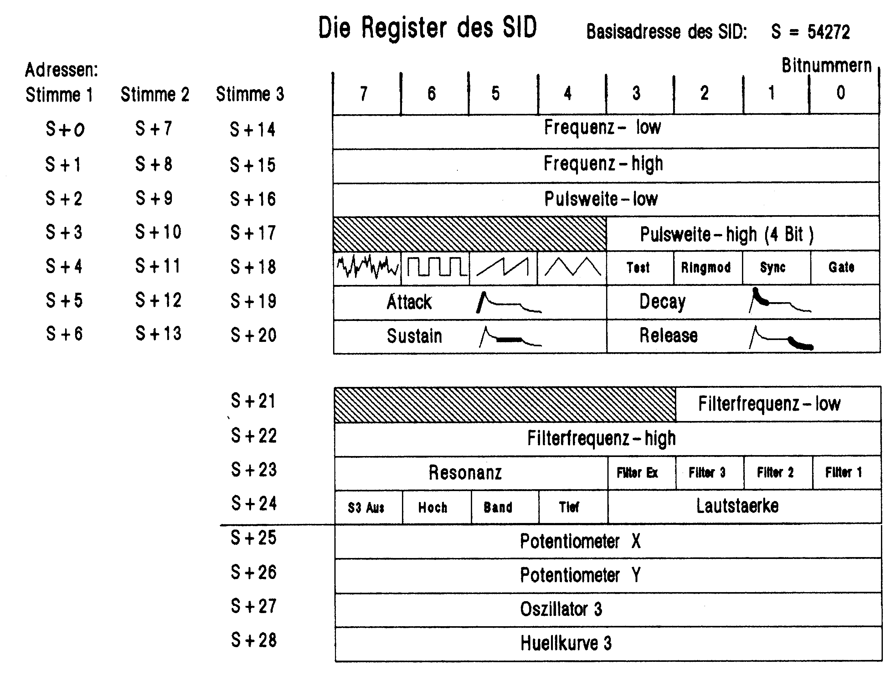
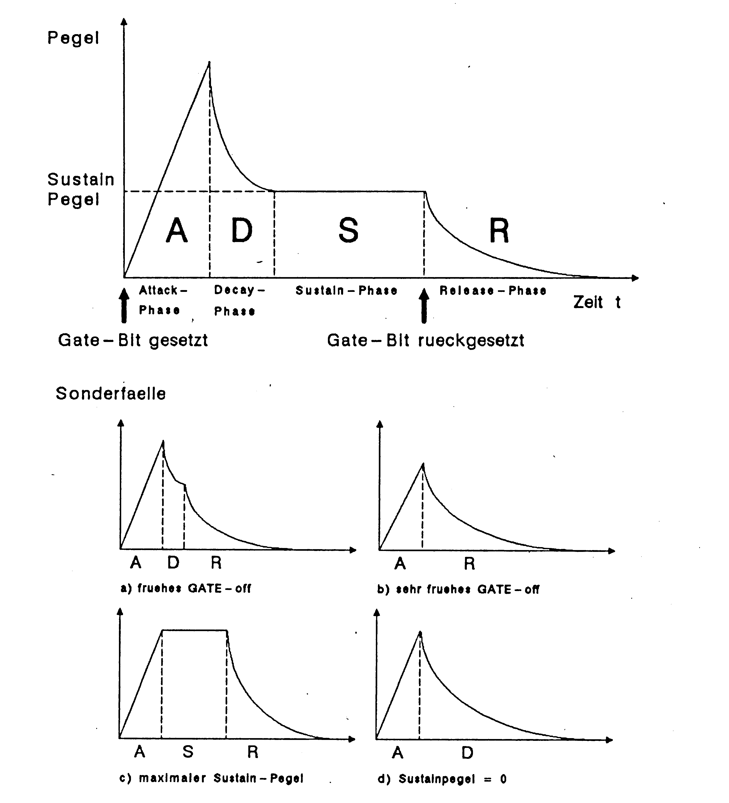
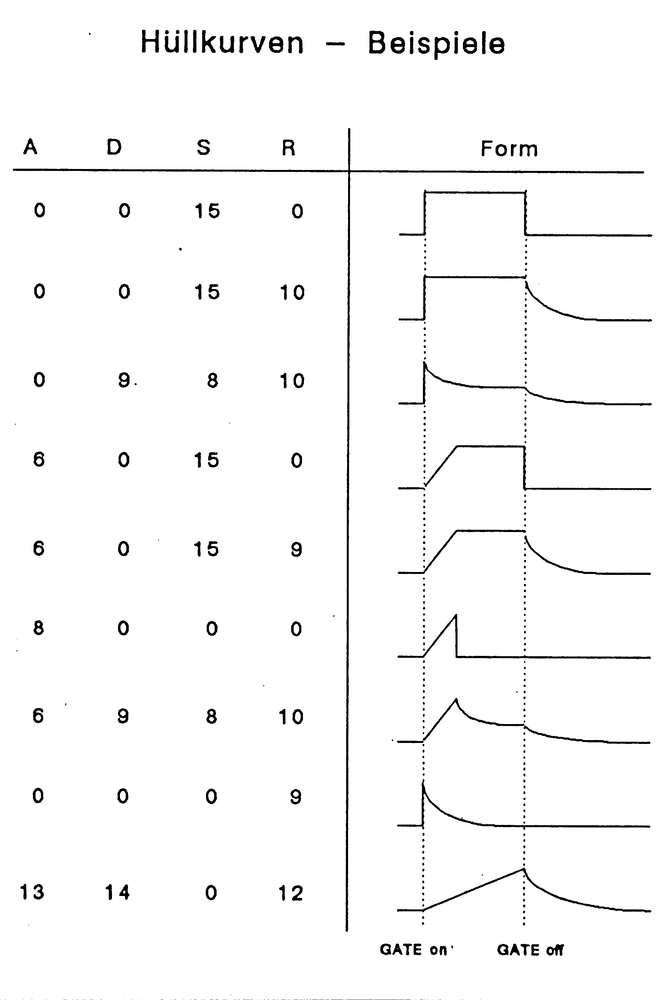

Sphärenklänge
Wissen Sie eigentlich, welche Klangvielfalt Sie Ihrem C 64 entlocken können; wie man Musik oder Geräusche programmiert? Wir bringen Ihnen eine ausführliche und leicht verständliche Einführung zu diesem interessanten Thema.
Zur Erzeugung von Geräuschen und von Musik ist der C 64 mit einem leistungsfähigen Baustein ausgestattet. Er trägt die Bezeichnung 6581 und soll hier im folgenden SID genannt werden. SID steht für »Sound Interface Device«, was man mit »Klang-Schnittstellen-Baustein« übersetzen könnte. Der SID ist eigentlich ein kleiner Synthesizer, der dreistimmige Melodien spielen oder drei unabhängige Geräusche gleichzeitig erzeugen kann oder auch eine Kombination von beiden, zum Beispiel eine zweistimmige Melodie oder ein Geräusch. Wie man ihn dafür programmiert, soll hier gezeigt werden. Da das Standard-Basic des C 64 keine speziellen Befehle zu diesem Zweck vorsieht, muß man sich näher mit dem inneren Aufbau des SID befassen, um ihn dann mit PEEK- und POKE-Befehlen zu steuern. Dieser gezwungenermaßen etwas unelegante Programmierstil hat aber wenigstens einen Vorteil für denjenigen, der in Maschinensprache programmieren kann oder es lernen will. Er kann nämlich die PEEK- und POKE-Befehle direkt in die Assemblersprache übernehmen. Stürzen wir uns also gleich mittenhinein in die SID-Programmierung (in Basic).
Beim SID wird ein Klang durch folgende Parameter (= Steuergrößen) beeinflußt:
| 1) Lautstärke | |
| 2) Hüllkurve | Sie steuert den zeitlichen Lautstärkenverlauf zum Beispiel eines ausklingenden Tones. |
| 3) Kurvenform | Sie ist für den Klangcharakter des Tones verantwortlich. |
| 4) Frequenz | Sie entspricht der Tonhöhe. |
Mit Einzelheiten und mit weiteren Parametern zur Klangsteuerung werden wir uns gleich befassen. Zunächst wollen wir aber einmal einen Ton erzeugen, zum Beispiel um zu hören, ob unser Monitor oder Fernseher, der die Töne wiedergeben muß, richtig eingestellt ist (Perfektionisten schließen den C 64 über die Audio/Video-Buchse und ein normales DIN-Überspielkabel an die HiFi-Anlage an).
| POKE 54296,15 | stellt den SID auf maximale Lautstärke |
| POKE 54278,240 | wählt eine einfache Hüllkurve. |
| POKE 54273,67 | stellt eine Frequenz ein (zirka 1000 Hz). |
| POKE 54276,17 | wählt eine sogenannte Dreieckskurve und schaltet zugleich den Ton ein (muß immer als Letztes geschehen!). |
Jetzt müßte ein Ton hörbar sein, der ähnlich wie bei einem Fernseh-Testbild klingt.
| POKE 54276,16 | schaltet den Ton wieder ab. |
Der gleiche Ton mit schärferem Klang gefällig?
| POKE 54276,33 | wählt eine »Sägezahnkurve«. Diese klingt heller und schärfer als das Dreieck. |
Doch anstatt mit geheimnisvollen POKEs zu arbeiten, sollten wir uns doch besser systematisch mit dem SID befassen. Wer aber nur schnell einen Klangeffekt für ein eigenes Programm benötigt und wen die Einzelheiten des SID nicht so sehr interessieren, der kann den systematischen Teil überspringen und gleich bei »Klangeffekte zum Abtippen« weiterlesen.
Unter einem Register versteht man in der Computertechnik einen Speicherplatz, der mit einer besonderen Funktion gekoppelt ist. Diese Speicherplätze sind also nicht dazu da, um Daten darin abzulegen, sondern um eine Funktion auszulösen oder um Informationen über den Zustand eines Bausteins zu bekommen. Man unterscheidet demnach Schreibregister und Leseregister.
Der SID verfügt insgesamt über 25 Schreib- und Leseregister. Auf Bild 1 sind diese in grafischer Form dargestellt. Der SID hat die Basisadresse:
S = 54272 (dezimal) oder $D400 (hexadezimal)

Unter dieser und den 28 folgenden Adressen können die Register des SID angesprochen werden. Wir werden in Zukunft Registeradressen wie in Bild 1 immer in der Form S+n (n = 0 bis 28) angeben, weil diese Schreibweise prägnanter als eine fünfstellige Zahl ist. Es ist empfehlenswert, sich auch in Programmen an diese Vereinbarung zu halten.
Das Registerschema gliedert sich in drei Blöcke: Der erste Block ist in Wirklichkeit dreimal vorhanden, für jede Stimme einmal. Die sieben Register dieser Blöcke haben also für die drei Stimmen unterschiedliche Adressen, wie links im Schema auch angegeben ist.
Ein Instrument mit 29 Registern
Der zweite Block (S+21 bis S+24) dient hauptsächlich zur zusätzlichen Klangbeeinflussung durch einen Filter. Den Filter werden wir aber erst später behandeln. Aus diesem Block interessiert zunächst nur die rechte Hälfte des Registers S+24, das für die Lautstärke zuständig ist.
Der dritte Block (S+25 bis S+28) besteht aus vier sogenannten »Nur-Lese-Registern«. Aus diesen Registern kann nur gelesen werden, Schreibzugriffe bleiben wirkungslos. Auch diese Register, die Spezialeffekten dienen, interessieren uns zunächst noch nicht.
Ein Register besteht, wie jeder andere Speicherplatz beim C 64 auch, aus einem Byte, beziehungsweise 8 Bit. Man sieht, daß einige Register noch in Felder unterteilt sind. Bei diesen Registern haben einzelne Bits oder Bitgruppen unterschiedliche Bedeutung. Die schraffierten Bereiche kennzeichnen Bits, die keine Funktion im SID haben. Wir werden bald sehen, wie man einzelne Bits innerhalb eines Byte gezielt ansprechen kann. Nun zu den Registern im einzelnen: Es werden beim ersten Block stellvertretend die Register der Stimme 1 (S+0 bis S+6) beschrieben. Die Register für Stimme 2 (S+7 bis S+13) und Stimme 3 (S+14 bis S+20) sind in ihrer Funktion identisch.
Ab hier ist es praktisch, wenn man bei der Lektüre das kleine Programm aus Listing 1 im Computer hat, denn dann kann man die Wirkung der Parameter in den SID-Registern gleich ausprobieren. Die Parameter stehen gut les- und editierbar in den DATA-Zeilen. Das Programm erzeugt nach dem Starten einen Ton bei einem beliebigen Tastendruck. Tasten mit Auto-Repeat-Funktion, wie zum Beispiel die Space-Taste, erzeugen einen Dauerton. Abgebrochen wird das Programm mit der RUN/STOP-Taste. Der letzte Parameter steuert übrigens die Tonlänge durch eine einfache Verzögerungsschleife.
Frequenz S+0 und S+1
Die Frequenz kann beim SID auf 16 Bit genau angegeben werden. Eine 16-Bit-Zahl kann Werte zwischen 0 und 65535 annehmen. Dieser Wert entspricht allerdings nicht der Frequenz in Hz (Hertz = Schwingungen pro Sekunde). Der SID-Wert F zu einer gegebenen Frequenz in Hz errechnet sich nach:
F = 17.0284 * FrequenzDer SID-Wert F zum sogenannten Kammerton a mit 440 Hz beträgt also (ganzzahlig gerundet):
F = 17.0284 * 440 ≈ 7492Die höchste vom SID erzeugbare Frequenz beträgt dann (gerundet):
65535 / 17.0284 ≈ 3849 (Hz)Zum Experimentieren mit Klangeffekten interessiert uns die genaue Frequenz eigentlich gar nicht, für korrekt gestimmte Tonleitern müssen wir sie dagegen kennen. Zunächst wollen wir aber erfahren, wie man den SID mit dem Wert F (Frequenz) programmiert. Diese im Dezimalsystem maximal fünfstellige Zahl wird im Binärsystem durch 16 Bit dargestellt. Da es sich beim C 64 um einen 8-Bit-Mikrocomputer handelt, müssen wir diesen Wert in zwei 8-Bit-Hälften, das sogenannte niederwertige und höherwertige Byte, kurz Low-Byte und High-Byte zerlegen. Hier zwei »Rezepte«:
1. Methode (Standard):
HI = INT(F/256)
LO = F-256*HIDas ist nichts anderes als eine Division durch 256 mit Rest. HI ist dabei der Quotient und LO der Divisionsrest. Die Werte LO und HI sind beide Byte-Werte und liegen damit im Bereich 0 bis 255. Im Fall F=7492 (entsprechend 440 Hz) ergibt sich zum Beispiel:
HI = 29 und LO = 682. Methode (mit Einschränkungen, aber schneller):
HI = F/256
LO = F AND 255Die INT-Funktion zur Berechnung von HI wurde hier gespart. HI kann hier noch Nachkommastellen haben; diese werden aber später von dem noch folgenden POKE-Befehl abgeschnitten. Die Berechnung von LO funktioniert hier nur bei F-Werten im Bereich 0 bis 32767. Die zweite Methode ist nur dann zu empfehlen, wenn es auf Geschwindigkeit ankommt.
Mit den Werten LO und HI müssen wir dann die beiden Register S+0 und S+1 besetzen:
POKE S+0,LO
POKE S+1,HIMan kann die Wirkungsweise des High- und Low-Bytes auch als Grob- und Feineinstellung auffassen. Oft genügt für einen Klangeffekt eine grobe Frequenzsteuerung. Man braucht dann nur das High-Byte zu berücksichtigen und kann das Low-Byte ein für allemal zum Beispiel auf 0 setzen.
Pulsweite S+2 und S+3
Der Parameter »Pulsweite« ist nur wirksam, wenn als Kurvenform das Rechteck gewählt wurde. Die Kurvenformen sind in Bild 1 bei Register S+4 grafisch dargestellt und werden im nächsten Abschnitt besprochen. Das Rechteck ist eine Kurvenform, die nur zwischen zwei Werten hin- und herspringt. Ist der obere Wert genauso lang wie der untere, so spricht man von einer symmetrischen Rechteckkurve. Das Verhältnis zwischen der Länge des oberen und des unteren Wertes kann mit dem Parameter »Pulsweite«, im folgenden P genannt, gesteuert werden. P kann Werte von 0 bis 4095 annehmen und wirkt sich auf die Klangfarbe des Tones aus. Das symmetrische Rechteck, das man mit P = 2048 erhält, klingt verhältnismäßig hohl und wird als typischer Rechteckklang bezeichnet. Entfernt man sich mit P von 2048 in Richtung 0 oder 4095, so wird der Klang zunehmend heller und später schnarrend oder zirpend. Maßgeblich ist hierbei nur der Abstand von P zum Mittelwert 2048. So klingt zum Beispiel P = 2048+500 genauso wie P = 2048-500. Bei P=0 und P=4095 wird kein Ton mehr erzeugt.
P ist eine 12-Bit-Größe und muß wie F in ein Low- und ein High-Byte zerlegt werden. Beim High-Byte können dabei nur die unteren vier Bit gesetzt sein. Zu diesem Zweck kann man ohne Einschränkungen die schon beschriebene Methode 2 anwenden:
HI = P/256
LO = P AND 255
POKE S+2,LO
POKE S+3,HISteuerregister S+4
Dieses Register ist für mehrere Funktionen gleichzeitig zuständig:
— Die Wahl der Kurvenform
— Ein- und Ausschalten des Tones
— Spezialeffekte Ringmodulation und Synchronisation
— Reset der Stimme
Zunächst einmal eine Tabelle mit den Funktionen im einzelnen:
| Bit | Dezimalwert (POKE...) | Funktion |
|---|---|---|
| 0 | 1 | GATE schaltet Ton ein und aus |
| 1 | 2 | SYNC Synchronisation (Spezialeffekt) |
| 2 | 4 | RING Ringmodulation (Spezialeffekt) |
| 3 | 8 | TEST Reset |
| 4 | 16 | wählt Dreieckskurve |
| 5 | 32 | wählt Sägezahnkurve |
| 6 | 64 | wählt Rechteckkurve |
| 7 | 128 | wählt Rauschen |
Mit einem POKE an die Adresse S+4 werden immer alle acht Bit gleichzeitig beeinflußt. Einen Befehl zum Setzen oder Löschen einzelner Bits gibt es nicht. Man muß sich daher über die gewünschten Werte aller acht Bits im klaren sein, auch wenn man nur ein Bit verändern will. Um den richtigen POKE-Wert zu erhalten, müssen die Wertigkeiten der Bits, die man setzen will, addiert werden. Dazu drei Beispiele:
1) Rechteck wählen und Ton einschalten
| Bits: | 6 und 0 |
| = Byte-Wert: | 2↑6+1 = 65 |
| POKE S+4,65 |
2) Ton abschalten, Rechteck gewählt lassen
| Bits: | 6 |
| Byte-Wert: | 2↑6 = 64 |
| POKE S+4,64 |
Anmerkung: Beim Abschalten eines Tons sollte man immer die zuletzt gewählte Kurvenform gewählt lassen, damit der Ton ausklingen kann. Mit POKE S+4,0 (alle Bits rücksetzen) wird der Ton abrupt abgebrochen.
3) Dreieck mit Ringmodulation wählen, Ton einschalten
| Bits: | 4, 2 und 0 |
| Byte-Wert: | 2↑4+2↑2+2↑0 = 16+4+1 = 21 |
| POKE S+4,21 |
Die Kurvenform
Sie bestimmt die Klangfarbe des Tones. Am vielseitigsten ist das schon besprochene Rechteck, weil man es durch die Pulsweite reichhaltig gestalten kann. Der Sägezahn klingt noch etwas heller und strahlender als das Rechteck. Er eignet sich besonders gut zur Imitation mancher Instrumentenklänge wie Streicher und Blechbläser. Das Dreieck klingt dagegen weich und dumpf und ist bei tiefen Tönen leider leise. Der Klang ist aber bei hohen Tönen sehr angenehm. Rauschen eignet sich für Effekte wie Wind, Düsenlärm, Schüsse, Explosionen und Schlagzeugklänge. Das Rauschen hat zwar keine feste Tonhöhe, doch sein Klangcharakter wird durch den Frequenzparameter entscheidend beeinflußt.
Indem man zwei Kurvenform-Bits gleichzeitig setzt, kann man durch Kombination mehrerer Kurvenformen weitere Klänge erzeugen. Dabei werden die Einzelklänge nicht etwa einfach gemischt, sondern es werden andere Kurvenformen erzeugt. Rauschen läßt sich allerdings nicht mit einer anderen Kurvenform kombinieren. Auch die Kombination von drei Kurvenformen ist unbrauchbar. Sie liefert einen leisen, fast im Rauschen untergehenden Klang. Es bleiben also drei Kombinationen, die sehr interessant klingen:
| POKE-Wert (An/Aus) | |
|---|---|
| Rechteck – Sägezahn | 97/96 |
| Rechteck – Dreieck | 81/80 |
| Sägezahn – Dreieck | 49/48 |
Der Klangcharakter variiert stark von tiefen zu hohen Tönen. Die letzte Kombination liefert zum Beispiel nur bei sehr tiefen Tönen gute Resultate. Der Klang der ersten beiden Kombinationen hängt natürlich auch von der Pulsweite P ab.
Die Spezialeffekte
Sie sollen hier nur am Rande erwähnt werden. Wird das SYNC-Bit für Stimme 1 gesetzt (Bit 1 in Register S+4), so kann Stimme 1 nicht mehr frei schwingen, sondern wird von Stimme 3 mit beeinflußt, man sagt hier »synchronisiert«. Auch das Ring-Bit bewirkt, daß Stimme 3 die Stimme 1 beeinflußt. Diese sogenannte Ringmodulation wirkt allerdings nur auf die Dreieckskurve. Der Effekt ist daher nur hörbar, wenn das Ring-Bit (Bit 2) zusammen mit Bit 4 für Dreieck gesetzt wird. Beide Effekte liefern ähnliche Resultate. Es lassen sich unter anderem metallische und glockenähnliche Klänge erzeugen. Die Stimme 3 braucht dabei nicht über ihr GATE-Bit eingeschaltet werden. Maßgeblich ist nur die Frequenz von Stimme 3 (Register S+14 und S+15).
Nun besitzen natürlich auch Stimme 2 und 3 je ein SYNC- und ein RING-Bit. Die drei Stimmen steuern sich dabei nach dem Schema:
Stimme 1 → Stimme 2
Stimme 2 → Stimme 3
Stimme 3 → Stimme 1
Das TEST-Bit wird man wahrscheinlich nie benötigen. Es übt eine lokale Reset-Funktion auf die jeweilige Stimme aus. Solange es gesetzt ist, ist nichts hörbar, unabhängig von den anderen Bits. Wenn man allerdings versucht, Rauschen mit einer anderen Kurvenform zu kombinieren, kann es passieren, daß die betroffene Stimme gewissermaßen »abstürzt« und nichts mehr von sich gibt. Man kann sie dann mit einem gezielten Reset über das TEST-Bit wieder zum Leben erwecken.
Die Hüllkurven S+5 und S+6
Wenn eine Stimme über das GATE-Bit eingeschaltet wird, dann folgt ihr zeitlicher Lautstärkenverlauf einer programmierbaren Hüllkurve. Die Hüllkurve bestimmt unter anderem, ob der Ton hart oder weich einsetzt und ob er schnell oder langsam ausklingt. Der Name kommt von den vier Phasen, die die Hüllkurve durchläuft. Jeder Phase ist dabei ein Parameter zugeordnet.
| Attack | Die Attack-Phase wird durch das Setzen des GATE-Bits eingeleitet. Der Pegel steigt dabei von 0 bis Maximum (Lautstärkeregister) an. Die Zeit für diesen Anstieg ist über den Parameter A in 16 nicht-linearen Stufen von 2 ms bis 8 s einstellbar. Eine kurze Attack-Phase bewirkt einen unmittelbaren und harten Toneinsatz wie bei Schlag- oder Zupfinstrumenten. Eine mittlere Attack-Zeit ist typisch für Bläser- und Streicherklänge, und mit einer langen Attack-Zeit kann man einen Ton wie am Mischpult langsam einblenden. |
| Decay | Nachdem der Maximalwert erreicht ist, fällt der Pegel in der Decay-Phase bis auf den Sustain-Pegel ab. Die Zeit dazu ist mit dem Parameter D in 16 nicht-linearen Stufen von 6 ms bis 24 s einstellbar. |
| Sustain | nennt man die Phase nach dem Pegelabfall in der Decay-Phase. Der Ton klingt dann solange auf dem Sustain-Pegel weiter, bis das GATE-Bit zurückgesetzt wird. Der Parameter SU bestimmt hier also keine Zeit, sondern einen Pegel und zwar in 16 linearen Stufen von Null bis Maximum. |
| Release | Beim Rücksetzen des GATE-Bits wird der Ton nicht einfach abgeschaltet, sondern nimmt in der Release-Phase gleichmäßig vom Sustain-Pegel bis nach Null ab. Die Zeit dazu ist in der gleichen Abstufung wie die Release-Zeit über den Parameter R einstellbar. |
Sonderfälle
Wenn das GATE-Bit bereits vor Erreichen der Sustain-Phase rückgesetzt wird, dann startet die Release-Phase mit dem aktuellen Pegel der Hüllkurve. Auf diese Weise ergeben sich:
a) Attack-Decay-Release-Zyklen ADR oder gar nur
b) Attack-Release-Zyklen AR
Bei einem Sustainpegel von Null sind Decay und Release funktionell gleichwertig (Beispiel d in Bild 2). Bei einem maximalen Sustain-Pegel entfällt die Decay-Phase (Attack-Sustain-Release-Zyklus ASR, Beispiel c).

Die Parameter A, D, SU und R sind 4-Bit-Werte. Jeweils zwei von ihnen werden wie folgt in ein Register gepackt:
POKE S+5,16*A+D
POKE S+6,16*SU+RBild 3 zeigt einige Hüllkurvenbeispiele.

Filter, Register S+21 bis S+24
Der Filter bietet neben der Wahl der Kurvenform eine weitere Möglichkeit zur Klangbeeinflussung. Im Gegensatz zu den vorher beschriebenen Parametern muß man sich aber nicht um den Filter kümmern, da er abschaltbar ist und weil der SID auch ohne Filter reichhaltige Klänge erzeugen kann. Um die Wirkungsweise eines Filters zu verstehen, muß man sich einen Klang aus mehreren sogenannten Sinustönen zusammengesetzt denken, dem Grundton und den Obertönen. Sinustöne sind gewissermaßen die nicht mehr weiter zerlegbaren Atome in der Akustik. Ein reiner Sinuston klingt dumpf und ohne charakteristische Färbung. Die vom SID erzeugte Dreiecksschwingung kommt vom Klang her einem Sinuston recht nahe. Die anderen Kurvenformen verdanken ihren helleren Klang einem reichhaltigeren Obertonspektrum (= Folge von Obertönen). Und dieses Obertonspektrum kann man mit dem Filter verändern. Der Filter im SID kennt dazu drei Betriebsarten, die über die Bits 4, 5 und 6 in Register S+24 gewählt werden:
| Tiefpaß | Frequenzen beziehungsweise Obertöne oberhalb der in den Registern S+21 und S+22 einstellbaren Filterfrequenz werden abgeschwächt, und zwar umso mehr, je höher diese Frequenzen sind. Der Gesamtklang wird dadurch dunkler und weicher. |
| Hochpaß | Es werden die Frequenzen abgeschwächt, die unterhalb der Filterfrequenz liegen. Höhere Frequenzen werden ungehindert durchgelassen. Mit einem Hochpaß kann man den Grundton eines Klanges abschwächen. Seine Gesamtzusammensetzung verschiebt sich dann zugunsten der Obertöne. Der Klang wird dabei dünner und heller. |
| Bandpaß | Dieser Filtermodus schwächt Frequenzen auf beiden Seiten der Filterfrequenz ab. Der Klang wird dabei, wie man fast erwarten kann, etwas dürftig, sofern man nicht maximale Resonanz (siehe weiter unten) einstellt. |
Filterfrequenz (Register S+22 und S+23)
Die Filterfrequenz kann auf elf Bit genau eingestellt werden. Dabei kann man aber die drei niederwertigen Bits in Register S+21 unberücksichtigt lassen, da ihr Einfluß praktisch unhörbar ist.
Resonanz und Stimmen-Wahlschalter (Register S+23)
Über den 4-Bit-Parameter Resonanz kann ein gefilterter Klang effektvoller gestaltet werden. Bei großer Resonanz (der Maximalwert ist 15) werden Frequenzanteile in der Gegend der Filterfrequenz verstärkt. Die sonstigen abschwächenden Eigenschaften von Tief- und Hoch- und Bandpaß bleiben dabei erhalten.
Über die Bits 0, 1 und 2 desselben Registers kann man für jede der drei SID-Stimmen unabhängig wählen, ob sie gefiltert oder ungefiltert erklingen soll. Ist zum Beispiel Bit 0 gesetzt, so wird Stimme 1 gefiltert. Das Bit 3, Filter Ex, steuert die Verarbeitung einer von außen zuführbaren Signalquelle, zum Beispiel eines zweiten SID, was uns aber hier nicht kümmern soll.
Filtermodus und Lautstärke (Register S+24)
Die Lautstärkeneinstellung haben wir schon kennengelernt. Man wird sie meistens auf ihren Maximalwert 15 stellen, weil dann der Rauschabstand und damit die Klangqualität am besten ist. Durch Setzen der Bits 4, 5 und 6 wird die Betriebsart des Filters, Tief-, Band- oder Hochpaß gewählt. Die Betriebsarten sind uneingeschränkt kombinierbar. Mit Bit 7 (S3 Aus) kann man die Stimme 3 unhörbar machen. Der Sinn dieser Sonderfunktion wird im Abschnitt über die Leseregister klar.
Ein Beispiel zur Filterprogrammierung: Stimme 1 soll mit maximaler Resonanz durch den Tiefpaßfilter geschickt werden:
FF = 50 Filterfrequenz (nur High-Byte)
FR = 241 (=15*16 für Resonanz +1 für Bit 1)
ML = 31 (=16 für Bit 4 + 15 für Lautstärke)
POKE S+22,FF
POKE S+23,FR
POKE S+24,MLDie Leseregister S+25 bis S+28
Die Register S+25 und S+26 haben mit der Klangprogrammierung nichts zu tun. Über sie können die Werte zweier an Joystick-Ports angeschlossener Potentiometer (Paddles) abgefragt werden. Interessant sind die Register S+27 und S+28:
Aus S+27 kann man den Signalverlauf von Stimme 3 in Form von Byte-Werten lesen. Mit folgendem kleinen Programm kann man diesen Signalverlauf sogar sichtbar machen:
10 S=54272
20 POKE S+14,10 :REM F LOW
30 POKE S+15,0 :REM F HIGH
40 POKE S+18,16 :REM DREIECK
50 PRINT TAB(PEEK(S+27)/7);"*":GOTO 50Hier sollte man einmal ein wenig mit den Parametern in Zeile 20-40 experimentieren.
Auf die gleiche Weise kann man aus Register S+28 den Hüllkurvenverlauf von Stimme 3 lesen.
100 S=54272
110 POKE S+19,16+11+11 :REM A D
120 POKE S+20,16*8 +11 :REM S R
130 POKE S+18,1 :REM GATE ON
140 FOR I=1 TO 50
150 PRINT TAB(PEEK(S+28)/7);"*"
160 NEXT I
170 POKE S+18,0 :REM GATE OFF
180 FOR I=1 TO 50
190 PRINT TAB(PEEK(S+28)/7);"*"
200 NEXT IDiese Werteverläufe sind besonders zum Modulieren anderer Stimmen geeignet. Normalerweise möchte man Stimme 3 dann nicht hören, wenn man ihren Signalverlauf oder ihre Hüllkurve anderweitig verwendet. Man kann sie dann, wie schon erwähnt, über Bit 7 in Register S+24 ausschalten.
Klangeffekte zum Abtippen
Nach diesem systematischen Teil folgen noch Einstellungen. Tabelle 1 enthält einige Parametersätze für Klänge, die der SID ohne großen Programmieraufwand erzeugen kann. Die Klangbezeichnungen wollen die Effekte nur subjektiv beschreiben und sind natürlich nicht zu wörtlich zu nehmen. Man muß nun lediglich die Werte einer Zeile in die, in der Kopfzeile angegebenen SID-Register schreiben, das GATE-Bit setzen und nach einiger Zeit zurücksetzen. Der Parameter M ist übrigens kein SID-Parameter, sondern soll eine Verzögerungsschleife steuern, die die Zeit zwischen GATE ON und GATE OFF bestimmt. Parameter M bezieht sich auf das Programm in Listing 1, das beim Experimentieren Hilfestellung leisten soll. Im DATA-Teil ab Zeile 320 sind die Parameter aus Tabelle 1 einzusetzen und zwar genau in der gleichen Reihenfolge. Das Programm belegt nach dem Start den SID mit den Parametern aus den DATA-Zeilen und wartet auf einen beliebigen Tastendruck, der dann den Klangeffekt auslöst. Man versuche es auch einmal mit den Tasten, die eine Auto-Repeat-Funktion haben, wie zum Beispiel die Space-Taste.
| Register | A S+5 |
D S+5 |
SU S+6 |
R S+6 |
C S+4 |
P S+2 S+3 |
F S S+1 |
FF S+22 |
FR S+23 |
ML S+24 |
M |
|---|---|---|---|---|---|---|---|---|---|---|---|
| Glöckchen | 0 | 10 | 0 | 10 | 16 | x | 40000 | x | 0 | 15 | 100 |
| Oboe | 8 | 7 | 10 | 8 | 64 | 250 | 7500 | x | 0 | 15 | 500 |
| Fagott | 8 | 7 | 10 | 8 | 64 | 250 | 2500 | x | 0 | 15 | 750 |
| Zungenpfeife | 8 | 0 | 15 | 10 | 48 | x | 400 | x | 0 | 15 | 1000 |
| Banjo | 0 | 8 | 0 | 8 | 32 | x | 7500 | 50 | 241 | 111 | 30 |
| Stahl | 0 | 0 | 15 | 12 | 96 | 2044 | 30000 | x | 0 | 15 | 100 |
| Feder | 0 | 8 | 0 | 9 | 32 | x | 750 | x | 0 | 15 | 35 |
| Preßlufthammer | 0 | 0 | 15 | 10 | 80 | 2100 | 200 | x | 0 | 15 | 2000 |
| Schuß | 0 | 8 | 0 | 10 | 128 | x | 10000 | x | 0 | 15 | 50 |
| Starkstrom | 0 | 0 | 15 | 0 | 128 | x | 100 | x | 0 | 15 | 2000 |
| Düsenflugzeug | 0 | 0 | 15 | 13 | 128 | x | 3000 | 50 | 241 | 31 | 3000 |
| Rakete | 0 | 0 | 15 | 15 | 128 | x | 1000 | 10 | 241 | 31 | 3000 |
x = don't care (Parameter muß nicht eingestellt werden)
Das Programm aus Listing 2 ist ganz ähnlich aufgebaut, kann aber ein viel größeres Spektrum von Effekten dadurch realisieren, daß es die Frequenz von Stimme 1 dynamisch verändert. Dazu dient die innere Schleife, Zeile 260-300. Dort wird bei jedem Durchlauf die Frequenz F1 mit einem Faktor G multipliziert. Für G > 1 steigt die Frequenz schneller an, für G < 1 nimmt sie ab und zwar um so schneller, je weiter G von 1 entfernt ist. Die Umrechnung von F1 in Low- und High-Byte geschieht hier nach der schnellen Methode 2. Man beachte, daß damit nur F1-Werte bis 32767 verarbeitet werden können, also nur die Hälfte des vollen Frequenzumfangs des SID. In der äußeren Schleife wird der Wert von F1 auf seinen Ausgangswert F zurückgesetzt. Außerdem steuert die äußere Schleife bei jedem Durchlauf einen ADSR-Hüllkurvenzyklus durch GATE-ON-GATE-OFF. Die Zahl N gibt dabei die Anzahl der inneren Schleifendurchläufe an, die Zahl M die der äußeren Schleifendurchläufe. Beispielparameter zu Listing 2 findet man in Tabelle 2.
| Fest eingestellt: Register |
FF S+22 |
FR S+23 |
ML S+24 |
|||||||
|---|---|---|---|---|---|---|---|---|---|---|
| x | 0 | 15 | ||||||||
| Register | A S+5 |
D S+5 |
SU S+6 |
R S+6 |
C S+4 |
P S+2 S+3 |
F S S+1 |
G | N | M |
| Telefon | 0 | 10 | 0 | 10 | 16 | x | 16000 | 1.33 | 2 | 25 |
| Laserkanone | 0 | 0 | 15 | 0 | 64 | 1000 | 30000 | 0.85 | 10 | 1 |
| Take-Off | 0 | 0 | 15 | 15 | 128 | x | 500 | 1.004 | 1000 | 1 |
| Turbine | 0 | 0 | 15 | 15 | 96 | 2044 | 20000 | 1.001 | 460 | 1 |
| Trommelwirbel | 0 | 5 | 2 | 9 | 128 | x | 20000 | 1 | 2 | 30 |
| Maschinengewehr | 0 | 5 | 2 | 9 | 128 | x | 12000 | 0.7 | 3 | 30 |
x = don't care (Parameter muß nicht eingestellt werden)
Das dritte Programm (Listing 3) verwendet schließlich den Signalverlauf oder die Hüllkurve von Stimme 3, um Stimme 1 zu modulieren. Dies geschieht in der inneren Schleife, Zeile 360-380. Q ist dabei die Adresse eines der Leseregister des SID, also entweder S+27 für den Signalverlauf oder S+28 für den Hüllkurvenverlauf. In der DATA-Zeile 650 ist dazu nur 27 oder 28 anzugeben. Über die Variable G kann die Stärke der Modulation, die sogenannte Modulationstiefe, gesteuert werden. Ein kleinerer Wert von G ergibt hier eine stärkere Modulation. Die äußere Schleife steuert hier ADSR-Hüllkurvenzyklen für Stimme 1 und Stimme 3. Dieses kleine Programm sollte Anlaß zum weiteren Experimentieren sein. Man kann statt der Tonfrequenz zum Beispiel auch einmal versuchen, die Pulsweite oder die Filterfrequenz zu modulieren. Tabelle 3 enthält einige Parametersätze für dieses Programm.
| Register | A | D | SU | R | C | P | F | G | N | M | A3 S+19 |
B3 S+19 |
F3 S+20 |
R3 S+20 |
C3 S+18 |
P3 S+16 S+17 |
F3 S+14 S+15 |
Q |
|---|---|---|---|---|---|---|---|---|---|---|---|---|---|---|---|---|---|---|
| Vogelgezwitscher | 0 | 8 | 0 | 8 | 16 | x | 40000 | 500 | 8 | 10 | 0 | 8 | 0 | 0 | x | x | x | 28 |
| Bongo | 0 | 7 | 0 | 7 | 16 | x | 4000 | 1000 | 4 | 1 | 0 | 8 | 0 | 0 | x | x | x | 28 |
| E-Baß | 0 | 8 | 0 | 9 | 32 | x | 750 | 1000 | 7 | 1 | 0 | 10 | 0 | 0 | x | x | x | 28 |
| Dampfhammer | 0 | 9 | 0 | 11 | 128 | x | 5000 | 200 | 20 | 15 | 0 | 9 | 0 | 9 | x | x | x | 28 |
| Martinshorn | 0 | 0 | 15 | 8 | 64 | 1000 | 7000 | 720 | 300 | 1 | x | x | x | x | 64 | 2048 | 15 | 27 |
| Sirene | 10 | 13 | 0 | 0 | 64 | 2048 | 10000 | 400 | 300 | 1 | x | x | x | x | 16 | x | 30 | 27 |
| Geklimper | 0 | 0 | 15 | 0 | 64 | 2048 | 10000 | 200 | 400 | 1 | x | x | x | x | 128 | x | 20 | 27 |
| Grollen | 9 | 10 | 0 | 0 | 32 | x | 50000 | 2000 | 40 | 10 | x | x | x | x | 128 | x | 500 | 27 |
Ausblick: Programmierung von Musikstücken
Dieses Thema wollen wir hier nur einmal streifen. Grundlage hierfür ist die genaue Kenntnis der Tonleiterfrequenzen. Diese müssen aber nicht mühsam aus Tabellen abgetippt, sondern können durch ein kleines Programm selbst berechnet werden. Man muß dazu ein klein wenig Mathematik betreiben:
1) Die Frequenzen zweier Töne im Oktavabstand verhalten sich wie 2:1.
2) Eine Oktave ist durch die Halbtöne in zwölf gleiche Intervalle eingeteilt und zwar nicht linear, sondern exponentiell.
3) Das Frequenzverhältnis H zweier aufeinanderfolgender Halbtöne ist die zwölfte Wurzel aus zwei. In Basic läßt sich das leicht ausrechnen:
H = 2(1/12)4) Man bekommt dann alle Halbtöne, indem man die Frequenzen, ausgehend von einem Grundwert, fortlaufend mit H multipliziert.
Im Programm aus Listing 4 macht das eine Schleife in Zeile 140 bis 190. Die Variable FAUS wird mit 110 vorbesetzt. Das entspricht einem »großen A«, dem Ton, der zwei Oktaven unter dem Kammerton, dem bekannten »eingestrichenen a« mit 440 Hz, liegt. In Zeile 170 wird FAUS in den dazugehörenden SID-Wert F umgerechnet. F wird in High- und Low-Byte zerlegt, welche in den Feldern FH und FL gespeichert werden. Dort stehen die Töne als fertige POKE-Werte zum Spielen einer Melodie zur Verfügung.
Das restliche Programm erzeugt aus diesen Werten eine mehr oder weniger zufällige Tonfolge auf dem SID. Ein wenig wird der Zufall aber durch die Werte in den DATA-Zeilen ab Zeile 500 gesteuert. Diese Werte stellen ein Blues-Schema in codierter Form dar. Das Schema selbst steht in den letzten drei Zeilen. Das Programm holt sich aus diesem Schema die erste Zahl. Diese zeigt auf eine der sieben Auswahlmengen in den vorausgehenden Zeilen. Die Auswahlmengen enthalten Tonnummern. Das Programm spielt nun nacheinander acht zufällig ausgewählte Töne aus dieser Menge. Tonwiederholungen sind dabei möglich. Anschließend geht das Programm über den nächsten Zeiger aus dem Schema zu einer neuen Auswahlmenge über. Die links etwas abgesetzten Zahlen dienen dabei nur zur Längenangabe der Auswahlmengen und des Schemas.
Mit dieser Technik kann man zwar noch keinen brauchbaren Blues »erwürfeln«, aber der Blues-Charakter wird aus den erzeugten Tonfolgen doch deutlich hörbar.
(Thomas Krätzig/tr)